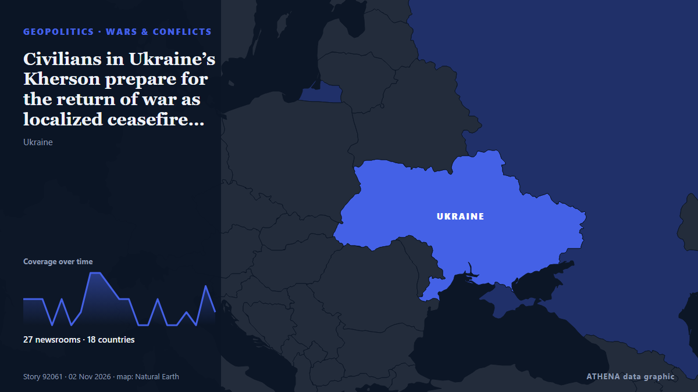

Kriege und Konflikte
| 20. Okt. | 1 |
|---|---|
| 21. Okt. | 0 |
| 22. Okt. | 0 |
| 23. Okt. | 1 |
| 24. Okt. | 0 |
| 25. Okt. | 0 |
| 26. Okt. | 0 |
| 27. Okt. | 1 |
| 28. Okt. | 1 |
| 29. Okt. | 3 |
| 30. Okt. | 5 |
| 31. Okt. | 6 |
| 1. Nov. | 6 |
| 2. Nov. | 0 |
Schlagzeilen werden auf Englisch angezeigt, wie veröffentlicht.

Civilians in Ukraine’s Kherson prepare for the return of war as localized ceasefire ends
KHERSON, Ukraine (AP) — Civilians in Ukraine’s southeastern Kherson region prepared Sunday for the end of a localized ceasefire that has marked the most significant truce between Kyiv and Moscow… von The Canadian Press (via CityNews)
Oil slips more than 1% as talks continue on ending Iran war
Both oil benchmarks are down in early trading. von The Business Times
Russian strikes cut power to thousands in Ukraine as drones damage Russian facility
Russia says 235 Ukrainian drones downed overnight, Kyiv says 371 of 433 Russian long-range drones shot down. von Express Tribune
UAE says hoping for breakthrough yet 'braced for the worst' in Iran-US war
The United Arab Emirates is optimistic about a potential diplomatic breakthrough between Iran and the United States but remains prepared for a possible escalation in tensions, according to a senior… von Arab News
Trump says Iran war will end ‘very soon, one way or the other’
President Trump expressed optimism that the conflict with Iran would end soon, though he didn’t provide specific details on how this would occur. von Arab News
Ukraine claims strike on major Russian oil refinery near Moscow
Russia reports significant damage to an industrial facility in the Nizhny Novgorod region after a massive overnight drone attack, as Kiev claims it targeted the Kstovo oil refinery. von TRT World
Iran warns US, Israel against new attacks after Trump, Netanyahu threats
TEHERAN: Iran’s supreme leader warned the United States and Israel Saturday of fresh attacks following their threats to resume strikes after crucial elections, as fears increased over a return to… von New Straits Times
Iran’s army warns any new US attack would spread war wider
The warning came amid renewed diplomatic efforts to prevent fighting from resuming, including a visit by Qatari mediators to Tehran. von Free Malaysia Today
3 Killed as Ukraine Renews Drone Strikes Against Oil Refineries
Deputy Prime Minister Alexander Novak confirmed that Ukrainian drones targeted three oil refineries and one gas chemical complex overnight. von The Moscow Times
US attacks 2 Iranian fishing boats off Masan, Qeshm Island
Iranian state broadcaster IRIB, citing a Hormozgan province official, said on Saturday that the US attacked two fishing boats near Qeshm Island, leaving two fishermen missing and one wounded. von Business Recorder
Saudi-led coalition says it intercepted 'hostile' drone over Riyadh region
Coalition spokesman says debris falls after interception but causes no casualties as authorities inspect site. von Anadolu Agency (English)
Araghchi warns Merz: ‘Red lines are a thing of the past’
Responding to remarks by German Chancellor Friedrich Merz regarding the cost of rising energy prices — which has exceeded 100 billion euros for European companies and consumers over the past eight… von IRNA (English)
Saudi Arabia and Yemen Warn of Iran-Backed Houthi Threat to Hormuz, Bab el-Mandeb Shipping
MANAMA, Oct 31: Saudi Arabia and Yemen's internationally recognized government have warned of growing threats to regional security and international shipping from Yemen's Houthi mo... von Arab Times
US Costs of Iran War Rise to Over $47 Billion, According to Pentagon Estimate
More than $6 billion would be needed to replace military equipment and 'platform losses' von Express Tribune
CONTSHIP JET Container Ship Sinks After Drone Attack in Black Sea
The CONTSHIP JET sank after being struck by three drones off Bulgaria; 18 crew rescued, and 20 containers fell into the sea. von SeaNews Türkiye
Kim Jong Un calls for North Korea’s drone technology superiority
North Korean leader Kim Jong Un calls for “absolute superiority” in drone capabilities. von Al Jazeera English
Evacuations begin in Ukraine under localized ceasefire brokered by Melania Trump
Residents of the Russian-occupied Ukrainian town have reported a worsening food crisis since 2022. von Express Tribune
Russian Attacks Leave Over 200,000 without Power in Central Ukraine
Ukraine needs support from the European Union to develop decentralized power generation, which would help ensure independent power supplies for residential buildings and keep businesses operating… von Ukrinform (English)
North Korea fires around 10 ballistic missiles toward sea off east coast, Seoul says
North Korea launched approximately 10 short-range ballistic missiles into the sea off its east coast. von Arab News